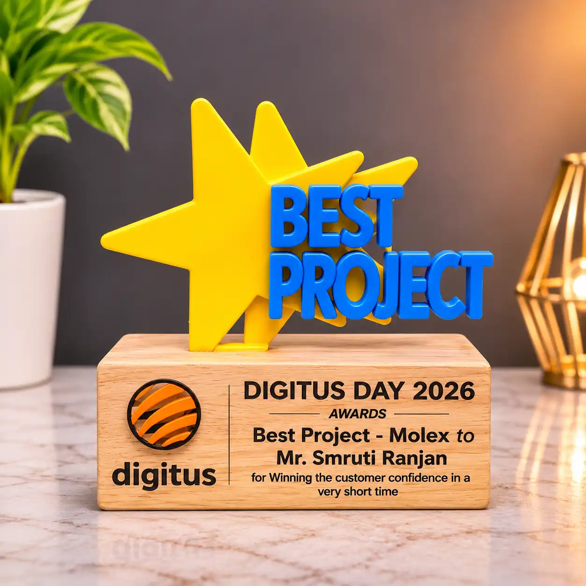

Two-time Sport Award winner
Recognised twice for outstanding contribution to UI design across multiple projects.
Three years of AI-driven dashboards, enterprise design systems and data-heavy tools, with the front-end skills to keep designs honest.
Over the last three years I've worked on AI-driven dashboards, enterprise design systems and data-heavy tools - taking messy inputs and giving people something they can actually read at a glance.
I care about the parts of design that don't photograph well: information hierarchy, accessibility, and whether a component library still makes sense a year after launch. I also still write front-end code, which keeps my designs honest about what's buildable.
Recognised twice for outstanding contribution to UI design across multiple projects.
Finished first, showing the same discipline and goal-focus on the track as at the desk.
Recognized for outstanding teamwork and collaboration in achieving shared goals.

Recognized for delivering an outstanding project through effective execution, innovation, and quality.